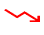
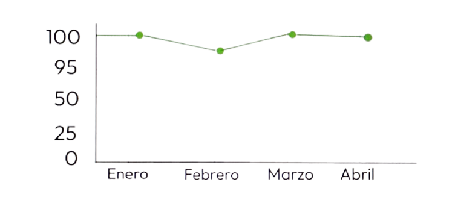
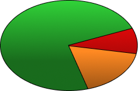

Configuración
Configuración

Análisis de Tendencias
Visualiza la evolución de la calidad del agua a lo largo del tiempo.
Zona regular
Sur
74% Calidad regular
Mejor Zona
Norte
Aumento leve
Mayor mejora
Centro
Disminución notable

Zona de Alerta
Oeste
Variación moderada
Evolución Temporal de Parametros
Consultar la evolucion de los parametros del agua

Calidad por Zona
Consultar la evolucion de los parametros del agua

Distribución pH
Distribución pH

-PH Normal:75%
-PH Alto:15%
-PH Normal:10%
Insights Principales
Observaciones clave basadas en el análisis de datos
-La zona Norte muestra la mayor mejora con +5.3% en calidad.
75% de las muestras mantienen pH en rangos normales.
Reducción del 30% en alertas semanales